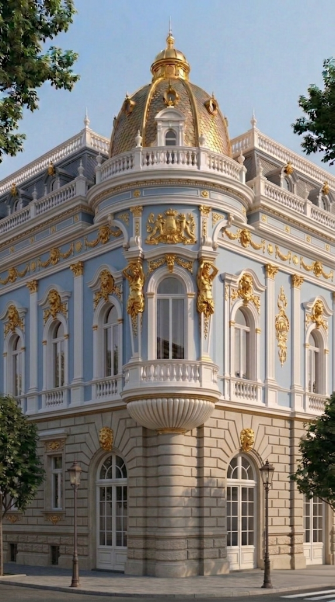

KRUNIĆ PALATA
THIRD GENERATION · SORBONNE · 20+ YEARS · EUROPE
Monumental facade, carefully brought back into focus.
Sombor’s architectural memory deserves more than a cosmetic treatment. The work starts with the original surface and ends with a legible future.

THE LEGACY · FOUNDED 1960
One uncompromising standard.
Restoration is a responsibility. The work protects original material, records what is known and makes every decision legible for the people who come next.